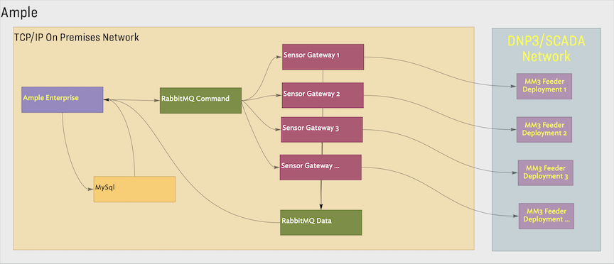

| Dates: | Aug 2015 - Feb 2017 |
| Role: | Team Lead |
| Technologies: | ansible, aws, jenkins, mysql, nagios, packer, postgres, vagrant, virtualbox, vsphere |
| Programming Languages: | java, python |
| DSLs: | ansible, sql |
Implement DevOps best practices to accelerate the Enterprise platform development. Minimize deployment failures. Provide additional support for mobile sensors by developing a cloud-based deployment system.
I managed a distributed development team as well as a remote team of DevOps contractors. I was responsible for working with the management, product and QA teams, Customer success and 3rd party points of contact to improve internal build, testing, deployment and monitoring processes.
The company’s primary line of business is designing and building hardware devices. Development cycles are long and testing is very intensive. A key goal was to decouple the software development cycle from the hardware verification testing cycle. Development of the enterprise software layer needed to accelerate with faster iterations and reduce testing times. Automated testing during the Jenkins build process was enhanced and internal release cycles were shorted.
Deployments to customer environments were infrequent and were not well automated or easily reproducible. A significant effort was made to build out a robust set of Ansible playbooks. Stabilizing these deliveries was a key goal of the management team.
We relied on VMWare virtualized environments to host the system. Providing reliable monitoring of the underlying virtualization layer was another critical task.
Finally, communication between teams supporting hardware development, enterprise software, testing and management was extremely demanding. Coordination overhead was a constant challenge to manage.
In the common case, the system was deployed into colocation facilities managed by client power companies. The Ample platform provides a single entry point to view measurements, status and configurations for the sensor fleets. Additionally, operators can manage and verify sensor configurations and upgrade the device firmware via OTAP.
The sensors communicate via a radio mesh network and communicate using the DNP3 protocol. The protocol is point-oriented. Its primary use is for configuring individual numerical and boolean values. Commands sent from the Ample interface are consumed by the Sensor Gateways which handle a set of sensors and marshall data to and from DNP3.

Because DNP3 is a connectionless protocol, akin to UDP, and point-oriented, building up data-series datasets required quite a bit of care. All communication to and from the field is asynchronous and conducted over very low-bandwidth. Operations to collect time-series data cached on individual devices can take hours and some procedures take days to complete.
As the product line evolved, smaller power companies expressed interest in fleet management over WiFI. In order to address these use cases, a cloud-based deployment was added to the company’s offerings.
These products are still in production.
| Aravind Rao: | https://www.linkedin.com/in/aravind-rao-4a2b4b291/ |
| Mukunda Saadi: | https://www.linkedin.com/in/mukundasaddi/ |
| Baseer Balazadeh: | https://www.linkedin.com/in/baseerbalazadeh/ |
| Raj Avasarala: | https://www.linkedin.com/in/ravasarala/ |
| Roland Hendel: | https://www.linkedin.com/in/rolandhendel/ |
| Ritesh Koickel: | https://www.linkedin.com/in/ritesh-koickel-0444b02/ |
Maintain a central console of deployed sensor networks. Enhance graphs for sensor monitoring statistics, device configuration management and endpoint software upgrades. Provide map views of sensor deployments.
I was responsible for managing the development team. This was a 3rd party group, and the majority of the team was in Bangalore. I worked to communicate product and management expectations for feature development and was the owner of the bug queue.
Most of quality issues were related to asynchronous communication issues between the Sensor Gateways and the sensor devices. Failure conditions identified in the testbed were difficult to assess and even harder to reproduce. Verifying bug fixes was not always deterministic. Customers were deploying 1000’s of sensors and the internal test beds hosted 10’s. Scale testing depended on experimental device emulators implemented in software.
The sensor deployment maps relied on a Voronoi diagram data structure.
Product improvements and bug fixes were pushed several times a week. The sensor deployment maps were a new feature that was delivered to production.
Improve internal development and release processes. Build and test multiple times a day to decouple the enterprise software development cycle from the slower hardware and embedded software testing cycles.
I was the primary owner for testing capability. I worked with the wider team to ensure the unit-tests kept pace with feature development. Additionally, failures reported during testing were added to the unit-test backlog
The system can be split into two domains. The enterprise layer up to the data bus was the portion addressed here. The challenge was to facilitate testing of the upper-half of the software stack without depending on full end-to-end testing.
Communication between sensor devices and the enterprise layer is asynchronous. Developing a suite of test-fixtures modeling different messaging scenarios allowed the team to verify two main use cases on the data and command queues.
Data acquisition
1. Processing of cached time series data
2. Processing of fault and waveform data
Device Configuration and OTAP Upgrade
1. Modifying device configuration
1. Updating device firmware via OTAP
A queue consumer client tool was developed to ‘emulate’ messages to and from a sensor gateway.
The pace of iteration for the enterprise layer was successfully decoupled from the release cycles of the sensor gateway and sensor devices. Several versions of the system were internally released on a weekly basis. This accelerated product development and reduced fix-times for reported issues.
Configure and manage deployed environments. Support new installations, upgrades, and sensor gateway scaling.
I worked with the operations team to learn the history of deployments and to build up a set of goals for the automation. I helped implement some of the playbooks and was responsible for verifying the new playbooks during production releases.
Full verification of the playbooks, especially when there were customer specific modifications were not verifiable in the customer colocation facilities.
Testing and verification of playbooks was mocked against an on-premise Vsphere deployment.
The Ansible playbooks were significantly improved.
Reliably deliver new releases of the Ample Management System and Sensor Gateway to customer data centers.
I was the principal on several of the early deployments. Train additional team members on deployment procedures.
The infrequency of deployments to customers made full verification slow.
These deployments upgraded versions for the Ample console, and Sensor Gateways. Changes to the MySql database schema
Remote deployments were stabilized. Management and customer confidence levels improved. The improved system was used to manage Florida Power and Light (FPL) and Pacific Gas and Electric (PG&E). Additional team members started to take the lead on deployments.
Build out infrastructure to monitor virtual instances at the resource and application level.
I worked with our IT/Ops team to specify resource level monitoring. I worked with the Enterprise Development team to start developing application entry-points to provide system-level observability.
Restricted access to customer facilities was available from a single virtual image; the Nagios dashboards were not accessible to the ops and dev teams. Alerts were received via email. The descriptive content of the alert messages was especially important. Customer operations teams did not know how to interpret alert events and were not able to take corrective action. Issues were resolved over the phone with customer teams or by directly accessing the remote installation.
Nagios was chosen for monitoring and Perl was used for plugins. The Nagios Remote Plugin Executor (NRPE) facility was the preferred delivery mechanism.
A set of resource level monitors was incorporated into the Nagios configurations which were added to the suite of services deployed to customer environments.